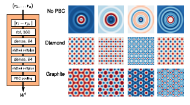

Machine learning models offer many advantages over other methods in the design of new materials. For example, machine learning models can be much faster than conventional, physics-based calculations and can be used when even the underlying mechanism driving a property are not yet understood. These advantages have inspired the development of many techniques for building machine learning models using materials data, which have proven to be valuable tools for accelerating materials design. However, the software and data necessary to actually use many of these models is often unpublished and even comparisons between similar techniques in the literature are rare. The lack of replicability of these methods frustrates the ability of engineers to identify appropriate methods and apply them to new problems.
In this project we aim to develop a library of example machine learning models based on materials data. In particular, we will focus on a particularly common type of machine learning model in materials: those that map the crystal structure of a material to its properties. Many exciting methods (including deep-learning-based techniques, as shown below) have been developed in the past few years to address this very problem. The goal of this internship is to generate examples of how to create and publish these models in Whole Tale so that the methods are available to the community at large. With the ability to run each of these techniques, we can then easily apply them to different datasets and learn whether different methods work better for different problems. Both the availability of examples on how to use these methods and the knowledge about when each is most well suited will help further enable the use of machine learning in materials design.

Filter design of the of the SchNet model (Schütt et al., arXiv:1712.06113v1) and the output of example filters for different crystal structures.
Primary Mentor: Kyle Chard, Computation Institute, University of Chicago and Argonne National Laboratory
Secondary Mentor(s): Logan Ward, Computation Institute, University of Chicago and Argonne National Laboratory, Ben Blaiszik, Computation Institute, University of Chicago and Argonne National Laboratory